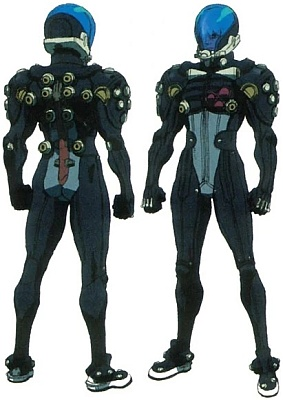

Voici une liste des protections corporelles disponibles dans le monde de Cyberpunk 2020. Comme vous pourrez le constater, la valeur des protections a été modifiée par rapport à celle donnée dans les règles de base. Les valeurs proposées rendent les armures "civiles" plus raisonnables : un vêtement "léger" ne peut vraisemblablement stopper une balle de 44 Magnum. Ainsi, sans doute, le canon de poche calibre 12 mm ne sera plus le standard invariablement utilisé par vos personnages joueurs et non joueurs.
ENC : perte de Réflexe (REF) et de Mouvement (MV) pour toutes les compétences. Ajoutez tous les encombrements et notez les sur la fiche pour référence.
Cumuler des couches : en plus du total d'ENC, avoir plus d'une couche d'armure sur la même zone du corps a ses limites :
Souple/rigide : réagissent différemment par rapport à certaines attaques (perce-blindage, explosions, flammes, collisions, chutes, etc). Les armures rigides sont généralement utilisées par les groupes militaires/paramilitaires/gouvernementaux et sont donc beaucoup plus voyantes.
Pour une armure souple, la protection est divisée par deux face aux armes tranchantes. Elles ne protègent pas contre les chutes ou l'impact d'une voiture. Les armures rigides offrent une protection réduite (un tiers) contre ce type de dégâts.
Face aux flammes, une armure souple n'offre que très peu de protection (elle aura tendance à s'enflammer, comme un vêtement classique). Une armure bien fermée et rigide comme une Metal Gear garantit quelques rounds de protection avant de s'échauffer à son tour.
| Nom | | | Type | Prix | Notes | ||||||||
| Armure modulaire MetalGear III | |||||||||||||
| Bottes MetalGear | 20 | 18 | 0 | Rigide | 200 | ||||||||
| Bras MetalGear | 20 | 20 | 0.5 | Rigide | 200 | ||||||||
| Casque intégral MetalGear | 22 | 0 | Rigide | 250 | -4 Perception | ||||||||
| Cuirasse MetalGear | 22 | 1 | Rigide | 300 | |||||||||
| Epaulières MetalGear | 20 | 0.5 | Rigide | 150 | |||||||||
| Gants MetalGear | 18 | 0 | Rigide | 150 | -2 précision | ||||||||
| Jambières MetalGear | 20 | 1 | Rigide | 200 | |||||||||
| Armure moulante Gibson | |||||||||||||
| Combinaison intégrale niveau 1 | 10 | 8 | 8 | 8 | 8 | 8 | 8 | 8 | 0 | Souple | 700 | ||
| Combinaison intégrale niveau 2 | 14 | 10 | 10 | 10 | 10 | 10 | 10 | 10 | 1 | Souple | 1000 | ||
| Combinaison intégrale niveau 3 | 18 | 12 | 12 | 12 | 12 | 12 | 12 | 12 | 2 | Souple | 1500 | ||
| Gilet niveau 1 | 10 | 0 | Souple | 200 | |||||||||
| Gilet niveau 2 | 14 | 1 | Souple | 400 | |||||||||
| Gilet niveau 3 | 16 | 1 | Souple | 700 | |||||||||
| Armure de sécurité Kelmar | |||||||||||||
| Armure de sécurité Classe 14 | 18 | 18 | 12 | 12 | 18 | 18 | 1 | Rigide | 1000 | ||||
| Armure de sécurité Classe 17 | 22 | 22 | 16 | 16 | 20 | 20 | 2 | Rigide | 1350 | ||||
| Armure de sécurité Classe 8 | 15 | 15 | 10 | 10 | 15 | 15 | 0 | Rigide | 800 | ||||
| Casque de sécurité Kelmar avec visière | 22 | 0 | Rigide | 350 | -3 Perception | ||||||||
| Armure de police BAMA | |||||||||||||
| Armure d'assaut | 24 | 22 | 22 | 22 | 14 | 22 | 22 | 14 | 3 | Rigide | 2500 | -2 précision | |
| Armure standard avec plaques de protection | 18 | 18 | 18 | 14 | 12 | 18 | 14 | 12 | 2 | Rigide | 1200 | ||
| Armure standard de terrain | 14 | 14 | 14 | 12 | 12 | 14 | 12 | 12 | 1 | Rigide | 1000 | ||
| Casque standard | 18 | 0 | Rigide | 150 | -2 Perception | ||||||||
| Plaque façiale Epoxy | 18 | 0 | Rigide | 100 | -1 Perception, ne protège que la face | ||||||||
| Armure Militech Série M-78 (la série M-78 est garantie contre les effets du perce-blindage) | |||||||||||||
| Gilet pare-balles M-78 | 18 | 12 | 2 | Rigide | 1600 | ||||||||
| T-shirt M-78 | 6 | 0 | Souple | 730 | |||||||||
| Veste M-78 | 12 | 10 | 10 | 10 | 1 | Souple | 1200 | ||||||
| Armure avec plaques de protection | |||||||||||||
| Gilet pare-balles avec plaques anti-trauma | 17 | 1 | Rigide | 450 | |||||||||
| Gilet pare-balles avec plaques de protection | 10 | 0 | Rigide | 140 | |||||||||
| Manteau avec plaques anti-trauma | 16 | 10 | 10 | 10 | 10 | 2 | Rigide | 450 | |||||
| Manteau avec plaques de protection | 10 | 8 | 8 | 8 | 8 | 0 | Souple | 350 | |||||
| Pantalon avec plaques anti-trauma | 14 | 12 | 2 | Rigide | 420 | ||||||||
| Pantalon avec plaques de protection | 10 | 8 | 1 | Souple | 140 | ||||||||
| Veste avec plaques anti-trauma | 16 | 8 | 8 | 8 | 1 | Rigide | 300 | ||||||
| Veste avec plaques de protection | 10 | 8 | 8 | 8 | 0 | Souple | 250 | ||||||
| Vêtements blindés SecureTech (type urbain flashy, qualité au dessus de la moyenne. Peut être de type affaires pour 50% de plus) | |||||||||||||
| Gilet renforcé SecureTech | 12 | 0 | Souple | 300 | |||||||||
| Gilet SecureTech | 8 | 0 | Souple | 250 | |||||||||
| Imperméable SecureTech | 14 | 12 | 12 | 12 | 12 | 12 | 0 | Souple | 1300 | ||||
| Manteau SecureTech | 14 | 12 | 12 | 12 | 12 | 0 | Souple | 650 | |||||
| Veste SecureTech | 12 | 10 | 10 | 10 | 0 | Souple | 350 | ||||||
| Accessoires de protection | |||||||||||||
| Exo-Plasts Ballistech | 0 | Souple | 150 | Se rigidifie après le premier impact (PA : 10, Enc : 1) | |||||||||
| Genouillères E-Z Glide | 6 | 0 | Rigide | 100 | +2 athlétisme pour les glissades | ||||||||
| Protège-bras PolyChromate | 6 | 0 | Rigide | 250 | +1 parade | ||||||||
| Protège-jambes PolyChromate | 6 | 6 | 0.5 | Rigide | 250 | +1 parade | |||||||
| Protèges Avant-bras | 8 | 0 | Rigide | 250 | +1 parade | ||||||||
| Quake Technologies | |||||||||||||
| Armure intégrale Quake Tech | 22 | 25 | 22 | 20 | 20 | 18 | 20 | 20 | 18 | 3 | Rigide | 1700 | -4 Perception |
| Combinaison Quake Tech | 16 | 14 | 12 | 12 | 12 | 12 | 2 | Rigide | 500 | ||||
| Gilet pare-balles Quake Tech | 16 | 14 | 1 | Rigide | 300 | ||||||||
| Armure assistée (nécessite une prise d'interface et un lien machine ou une connexion ACPA) | |||||||||||||
| Combinaison intelligente composite | 22 | 10 | 10 | 10 | 10 | 10 | 1 | Rigide | 4800 | Seule la partie au niveau du torse est rigide | |||
| MetalGear IV intégrale (sans casque) | 25 | 22 | 22 | 22 | 20 | 22 | 22 | 20 | 2 | Rigide | 3500 | -1 précision | |
| MetalGear V intégrale (sans casque) | 25 | 22 | 22 | 22 | 20 | 22 | 22 | 20 | 1 | Rigide | 8200 | -1 précision | |
| Veste intelligente | 16 | 14 | 14 | 14 | 0 | Souple | 1800 | ||||||
| Veste intelligente renforcée | 18 | 16 | 16 | 16 | 1 | Rigide | 2600 | ||||||
| Armures furtives | |||||||||||||
| Armure furtive Arasaka BlackJack | 16 | 16 | 14 | 14 | 14 | 12 | 14 | 14 | 12 | 2 | Rigide | 12000 | +3 Discrétion audio, camouflage visuel : -4 Perception, -1 par 10m de distance. Réserves vitales de 4 heures, invisible aux radars. Le casque inclut : vision de nuit (starlight), anti-éblouissement, lunette de visée, affichage Time Square. |
| Armure furtive assistée Arasaka BlackJack | 16 | 16 | 16 | 16 | 16 | 14 | 16 | 16 | 14 | 1 | Rigide | 29000 | Nécessite une prise d'interface, +3 Discrétion audio, camouflage visuel : -4 Perception, -1 par 10m de distance. Réserves vitales de 4 heures, invisible aux radars. Le casque inclut : vision de nuit (starlight), anti-éblouissement, lunette de visée, affichage Time Square. |
| Camouflage thermoptique | 1 | Souple | 45000 | Camouflage visuel : -10 Perception, -1 par 5m de distance | |||||||||
| Casque caméléon Militech M96 GhostSuit | 16 | 0 | Rigide | 600 | -3 perception | ||||||||
| Casque Gibson BattleGear SneakSuit | 18 | 0 | Rigide | 185 | -3 Perception | ||||||||
| Casque Militech M73 Mirage Gear | 22 | 0 | Rigide | 140 | -3 Perception | ||||||||
| Combinaison de plongée Gibson/HydroSubsidium Sneak | 10 | 10 | 10 | 10 | 10 | 10 | 10 | 10 | 10 | 2 | Rigide | 3500 | Contient 120 minutes de réserve d'air |
| Combinaison de plongée Gibson/Mitsubishi SneakSuit | 8 | 8 | 8 | 8 | 8 | 8 | 8 | 8 | 8 | 2 | Rigide | 2500 | Contient 40 minutes de réserve d'air |
| Combinaison Militech M73 Mirage Gear | 12 | 12 | 12 | 12 | 12 | 12 | 12 | 12 | 12 | 1 | Souple | 1050 | Camouflage visuel : -2 Perception, -1 en mouvement, -1 par 10m de distance |
| Combinaison moulante Gibson BattleGear SneakSuit | 10 | 10 | 10 | 10 | 10 | 10 | 10 | 10 | 10 | 0 | Souple | 560 | Camouflage visuel : -4 Perception en lumière faible, -1 par 10m de distance. Fond au soleil |
| Gilet pare-balles Gibson BattleGear SneakSuit | 16 | 14 | 14 | 14 | 1 | Rigide | 375 | ||||||
| Gilet pare-balles Militech M73 Mirage Gear | 18 | 16 | 16 | 16 | 1 | Rigide | 525 | ||||||
| Vêtements caméléons Militech M96 GhostSuit | 10 | 10 | 10 | 10 | 10 | 10 | 10 | 10 | 1 | Souple | 5300 | Camouflage visuel : -4 Perception, -2 en mouvement, -1 par 10m de distance | |
| Armures génériques en Epoxy ou Kevlar | |||||||||||||
| Armure anti-émeute | 20 | 22 | 15 | 15 | 15 | 15 | 15 | 3 | Rigide | 1850 | |||
| Armure d'assaut US Army | 22 | 22 | 20 | 20 | 20 | 22 | 20 | 2 | Rigide | 5900 | |||
| Armure de la zone de combat | 12 | 11 | 9 | 9 | 9 | 11 | 9 | 2 | Rigide | 100 | Armure artisanale faite en pneus, plastiques de récupération, bouts de kevlar, etc. | ||
| Armure de patrouille | 15 | 12 | 10 | 10 | 12 | 10 | 2 | Rigide | 900 | ||||
| Armure médicale de combat | 18 | 18 | 15 | 15 | 15 | 15 | 15 | 3 | Rigide | 3400 | |||
| Armure médiévale | 10 | 10 | 10 | 10 | 10 | 10 | 10 | 10 | 10 | 6 | Rigide | 3600 | -5 Perception |
| Armure navale flottante | 10 | 10 | 10 | 10 | 10 | 10 | 10 | 3 | Rigide | 550 | |||
| Armure réactive | 20 | 20 | 1 | Rigide | 4990 | ||||||||
| Bas renforcés | 4 | 4 | 0 | Souple | 110 | ||||||||
| Bleu de travail Lano | 12 | 11 | 11 | 11 | 11 | 11 | 2 | Souple | 1600 | ||||
| Bottes Pinamonte | 12 | 12 | 0 | Rigide | 500 | ||||||||
| Bouclier de police anti-émeute | 15 | 15 | 1 | Rigide | 150 | ||||||||
| Bouclier de police multi-usage | 10 | 0 | Rigide | 80 | |||||||||
| Capuche Kevlar | 5 | 0 | Souple | 75 | |||||||||
| Casque | 10 | 0 | Rigide | 4100 | |||||||||
| Casque Acier | 14 | 0 | Rigide | 75 | -1 Perception | ||||||||
| Casque de moto | 10 | 0 | Rigide | 30 | -2 Perception | ||||||||
| Casque de nylon avec visière | 18 | 0 | Rigide | 100 | -2 Perception, militaire, milices, etc. | ||||||||
| Casque de police (circulation) | 14 | 0 | Rigide | 170 | -1 Perception | ||||||||
| Casque de police (paradoc) | 16 | 0 | Rigide | 180 | -1 Perception | ||||||||
| Casque de police (patrouille) | 17 | 0 | Rigide | 230 | -1 Perception | ||||||||
| Casque de travail Guercio | 18 | 0 | Rigide | 600 | -1 Perception | ||||||||
| Casque Epoxy | 18 | 0 | Rigide | 150 | -2 Perception | ||||||||
| Chemise Kevlar | 5 | 5 | 4 | 4 | 0 | Souple | 100 | ||||||
| Combinaison de campagne | 7 | 7 | 7 | 7 | 7 | 7 | 7 | 7 | 0 | Souple | 1300 | ||
| Combinaison environnementale | 10 | 10 | 10 | 10 | 10 | 10 | 10 | 10 | 10 | 3 | Rigide | 725 | |
| Combinaison moulante Ballistech III | 0 | Souple | 3500 | Absorbe 1/3 des dégâts (max 15) | |||||||||
| Combinaison utilitaire de Netrunner | 8 | 8 | 8 | 8 | 8 | 8 | 8 | 8 | 0 | Souple | 6300 | ||
| Ensemble en cuir épais | 3 | 3 | 3 | 3 | 3 | 3 | 0 | Souple | 50 | ||||
| Gilet de mitrailleur | 22 | 20 | 3 | Rigide | 250 | ||||||||
| Gilet de sauvetage Ballistech | 7 | 7 | 1 | Souple | 250 | EV : 4 once inflated | |||||||
| Gilet Kevlar | 10 | 0 | Souple | 100 | |||||||||
| Gilet Kevlar lourd | 18 | 0 | Rigide | 175 | |||||||||
| Gilet pare-balles dissimulable | 10 | 8 | 8 | 0 | Rigide | 200 | |||||||
| Imperméable renforcé | 7 | 7 | 7 | 7 | 7 | 7 | 0 | Souple | 250 | ||||
| Maille pare-balles | 15 | 15 | 15 | 15 | 15 | 15 | 15 | 15 | 15 | 1 | Souple | 2700 | |
| Manteau grands froids | 7 | 7 | 7 | 7 | 7 | 1 | Souple | 250 | |||||
| Pantalon Epoxyde | 9 | 9 | 1 | Rigide | 300 | ||||||||
| Pantalon légèrement blindée | 7 | 7 | 0 | Souple | 100 | ||||||||
| Pantalon toile d'araignée | 11 | 11 | 0 | Souple | 5200 | Rare | |||||||
| Plaque façiale Epoxy | 18 | 0 | Rigide | 100 | -1 perception, ne protège que la face | ||||||||
| Plaques de protection pour casque | +4 | 0 | Rigide | 50 | |||||||||
| Toque blindée imitation fourrure | 5 | 0 | Rigide | 75 | |||||||||
| Veste blindée composite | 15 | 11 | 11 | 11 | 2 | Rigide | 750 | ||||||
| Veste composite rigide | 18 | 15 | 15 | 15 | 3 | Rigide | 1600 | ||||||
| Veste de treillis blindée | 11 | 9 | 9 | 9 | 1 | Souple | 350 | ||||||
| Veste légèrement blindée | 8 | 7 | 7 | 7 | 0 | Souple | 150 | ||||||
| Veste lourde | 12 | 9 | 9 | 9 | 2 | Souple | 250 | ||||||
| Veste renforcée | 10 | 8 | 8 | 8 | 1 | Souple | 200 | ||||||
| Veste toile d'araignée | 11 | 11 | 11 | 11 | 0 | Souple | 5800 | Rare | |||||
Ce sont normalement les armures les moins visibles, les plus anodines.
Exemple : je veux un long manteau type duster blindé. Dans (a) c'est un vêtement de type Lourd, prix de base 55. Je le prends en cuir (+50%) : 80 environ. Puis je regarde dans (b), colonne Lourd. Je prends le blindage maximal de type souple (moins visible) : PA 16 pour un multiplicateur de x4,5, soit 360 eb. Enfin, je regarde dans (c) et je veux le Duster en style Edgerunner (300%) et de bonne qualité (150%) soit une augmentation du prix de 450% (x4,5). Le prix final fait quand même bien mal aux fesses : 360 x 4,5 = 1620 eb. Mais j'ai du style, des poches partout pour les munitions et gadgets, et une armure de 16 sur presque tout le corps.
Tu vas me dire : "ouais, mais une armure MetalGear complète coûte un peu moins cher, pour une PA supérieure".
Oui mais avec ce MetalGear tu as également une ENC de 2 (donc -2 en DEX et MOUV en permanence) et puis, quand je m'approche du QG d'Arasaka avec mon Trench Coat, ils vont probablement pas tirer d'abord avec leurs armes anti-borg.
| Matériaux Légers | Matériaux Moyens | Matériaux Lourds | |||
| Bandeau Bas/Collants Cagoule Cape courte Chapeau Chemise Chemisier Cravate Débardeur Gants Gants longs Gilet Jupe Lunettes de soleil Masque de Ski Mini-jupe Pull Robe Salopette Shorts T-Shirt Tunique | 15 20 10 75 5-25 20 15 20 10 20 30 25 55 5-50 15 30 20 50 50 10 10 25 |
Bottes de moto Bottes montantes souples Bottes souples Cape Cape Longue Chaussures Gants de moto Jupe en cuir Manteau Long Pantalons / Jeans Tunique en cuir Veste Veste longue | 40 40 25 50 90 15 35 55 125 20 75 35 40 |
Blouson de moto Blouson en cuir Bottes rigides Cuissardes Jambières Manteau en cuir Manteau Long Pantalon de moto | 100 70 50 80 60 110 55 65 |
| Note : |
|
| Matériaux Légers | Matériaux Moyens | Matériaux Lourds | ||||
| PA | Coût | Enc. | Coût | Enc. | Coût | Enc. |
| 4 6 8 10 12 14 16 18 20 |
x3 x3,5 x4 x4,5 x5 x6 x7 |
-1 -2 |
x2,5 x3 x3,5 x4 x4,5 x5 x5,5 x6 x7 |
-1 -2 -3 |
x1,5 x2 x2,5 x3 x3,5 x4 x4,5 x5 x5,5 |
-1 -2 |
| Style | ||
| Chic Générique | Vêtements de tous les jours, d'apparence modeste. S'ils sont blindés, cela est évident (avec par exemple des logos tels que "Armorplast"). | 100% |
| Relax | Vêtement sportifs, vêtements pratiques ou d'intérieur pour la classe moyenne. | 200% |
| Urbain Flashy | A la mode du mois, souvent noir avec parfois des panneaux fluorescents, des poches et autres fermetures éclairs en plus. | 200% |
| Affaires | Chic corporatiste. Varie en style, de Nordstrom à Armani. | 300% |
| EdgeRunner | Pour le samouraï des rues ! Très utilitaire (poches, rembourrage et doublure changeable pour armure). | 300% |
| Haute Couture | A la mode du jour, directement importé des plus grands couturiers de NYC, Paris, Milan ou Tokyo. | 400% |
| Qualité | ||
| Qualité Bon Marché | Matériaux inférieurs se déchirant facilement. Pour les vêtements se jetant au lieu de les laver. | 50% |
| Qualité Moyenne | Potable, mais pas super résistants. Vêtements génériques et peu chic. | 100% |
| Qualité Bonne | Peut survivre à de nombreux lavages, bons et beaux matériaux qui correspondent à ce que l'on attend d'un vêtement. | 150% |
| Qualité Très Bonne | Disponible dans les meilleurs magasins uniquement et pour la classe aisée. Donne +1 à Habillement et Style. | 200% |
| Qualité Excellente | Meilleur produit de sa catégorie, conçu par des designers connus. Donne +2 à Habillement et Style. | 400% |
| Qualité Super Chic | Conçu sur mesure ou dans les boutiques les plus outragement chères. Donne +3 à Habillement et Style. | 700% |
| Options cosmétiques | ||
| PolyLog | Change de couleur selon 4 préconfigurations. Peut dysfonctionner en conditions de combat. | 300% |
| PolyChromic | Change constamment de couleur avec différents effets (iridescente, arc en ciel, etc). Peut dysfonctionner en conditions de combat. | 500% |
| Options pratiques | ||
| Ignifugé | Donne 20 PA contre les flammes. | 250% |
| Anti Perce-Blindage | Plastiques réactifs sous courant électrique : annule les effets perce-blindage (uniquement ceux divisant par 2). | 300% |
| Protection EMP | Donne 10 PA et +4 aux jets d'étourdissement contre les armes électromagnétiques. | 200% |
| Résistance Acide/Base | Donne 4 PA contre les acides et autres produits corrosifs. | 150% |
| Résistance Acide/Base II | Donne 6 PA contre les acides et autres produits corrosifs. | 300% |
| Arasaka Egret Psych Suit | |
|  |  |
| Encombrement : 0 Type : Souple | Prix : 3450 eb |
|
Cette combinaison contient un ensemble de haut-parleurs hautement spécialisés, et peut être réglée pour générer une quantité incroyable de bruit blanc, annulant tout son moins bruyant qu'un coup de feu dans un rayon de 2 mètres. Les amplificateurs audio ne sont d'aucune utilité, cependant les détecteurs sismiques remarqueront les vibrations causées par le son jusqu'à 50 mètres de distance. La combinaison peut être mise en mode anti-résistance, les haut-parleurs changeant de fréquence et la combinaison agit alors comme une version portable de l'Arasaka Nauseator (voir Chrome 2 page 42) mais avec le champ généré dans une bulle autour de l'utilisateur. La combinaison peut également jouer de la musique à très fort volume, donnant lieu à une tactique qui consiste à ne plus faire aucun bruit, attendre qu'une cible augmente son niveau audio parce qu'elle n'entend rien, puis jouer des sons à haute fréquence ou de la musique à des décibels très élevés pour faire sauter ses implants cyberaudio. La combinaison est livrée avec un casque fermé spécialement conçu, qui protège l'utilisateur des effets de la combinaison.
| |
| Arasaka Gasium K-1 Battlesuit | |
 | |
| Encombrement : +1 Type : Rigide | Prix : 5200 eb |
|
Modèle le plus léger d'une série d'indice de protection croissant, cette armure personnalisable pour chaque client (holsters, porte-chargeurs...) est très légère et maniable pour son degré de résistance.
| |
| Arasaka Gasium K-2 Battlesuit | |
 | |
| Encombrement : +1 Type : Rigide | Prix : 5900 eb |
|
Cette armure personnalisable pour chaque client (holsters, porte-chargeurs...) est très légère et maniable pour son degré de résistance.
| |
| Arasaka Gasium K-3 Battlesuit | |
 | |
| Encombrement : +1 Type : Rigide | Prix : 5500 eb |
|
Cette armure personnalisable pour chaque client (holsters, porte-chargeurs...) est très légère et maniable pour son degré de résistance.
| |
| Arasaka Gasium K-4 Battlesuit | |
 | |
| Encombrement : +1 Type : Rigide | Prix : 7200 eb |
|
Cette armure personnalisable pour chaque client (holsters, porte-chargeurs...) est très légère et maniable pour son degré de résistance.
| |
| Arasaka Gasium K-5 Battlesuit | |
 | |
| Encombrement : +1 Type : Rigide | Prix : 7350 eb |
|
Cette armure personnalisable pour chaque client (holsters, porte-chargeurs...) est très légère et maniable pour son degré de résistance.
| |
| Arasaka Gasium K-6 Battlesuit | |
 |  |
| Encombrement : +1 Type : Rigide | Prix : 8000 eb |
|
Cette armure personnalisable pour chaque client (holsters, porte-chargeurs...) est très légère et maniable pour son degré de résistance. La visière de casque est équipée de vision IR, UV et anti-flash.
| |
| Arasaka Ghost Suit | |
 |  |
| Encombrement : 0 Type : Rigide | Prix : 3675 eb |
|
Conçue en priorité pour les opérations furtives, cette combinaison compense son indice de protection moyen (d'un autre côté, si vous vous faites tirer dessus, c'est que vous avez foiré quelque part) par un tissage en fibres absorbant totalement la chaleur corporelle. Le porteur est donc invisible aux senseurs infrarouge (s'il porte la tenue dans son intégralité, cagoule comprise). Très souple et ne gênant en rien les mouvements, la combinaison a toutefois le défaut majeur de n'avoir aucun moyen de dissiper automatiquement la chaleur qu'elle retient, ce qui en fait un véritable sauna en quelques heures. Le porteur, au delà de sa Consitution/2 heures, reçoit un malus cumulatif de 1 par 1/4h à tous ses jets s'il n'évacue pas la chaleur. L'évacutation n'est possible qu'en retirant pendant une dizaine de minutes plusieurs pièces de l'armure le temps que la chaleur se dissipe, au risque de se faire repérer.
| |
| Arasaka IAA-13 | |
 | |
| Encombrement : 0 Type : Rigide | Prix : 1350 eb |
|
Cette armure légère est un des modèles les plus populaires d'Arasaka, et est très répandue dans les forces de sécurité privées. Le casque peut accueillir 4 options de cyberoptique.
| |
| Arasaka K-7 Metal Gear | |
 | |
| Encombrement : 0 Type : Rigide | Prix : 1370 eb |
|
Une version légère et moins coûteuse de la tenue de combat de Gasium.
| |
| Arasaka Lynx | |
 | |
| Encombrement : +1 Type : Rigide | Prix : 1475 eb |
|
La seconde tentative d'Arasaka après la K-7 de reproduire le succès de la Gasium Battle Gear. Un peu moins résistante et avec un certain degré d'encombrement, elle a l'avantage du prix.
| |
| Arasaka ORC | |
| Encombrement : +1 Type : Rigide | Prix : 22500 eb |
|
Version plus légère, bien que plus encombrante, de la Metal Gear, cette armure de combat légèrement assistée accorde un bonus de +1 au REF et +2 au MV. Utilisée fréquemment par l'E-SWAT pour des missions éclairs à haut risque, elle est donc conçue pour être maniable et relativement furtive. L'ORC exploite un data film pour transmettre les informations de l'utilisateur à l'armure et peut analyser les signatures audio environnantes offrant ainsi +2 aux jets de Perception. Le système est également capable d'identifier le bruit de l'armure des alliés afin d'améliorer les performances de l'équipe pendant un assaut furtif. Le casque comprend les équipements suivants : Ecoute amplifiée, Amplificateur de lumière, Affineur d'image et Téléoptique.
| |
| Arasaka Police Issue Body Armor | |
 |  |
| Encombrement : 0 Type : Souple | Prix : 760 eb |
|
Cette armure mise au point par Arasaka a pour vocation d'être adaptable à toutes les forces de l'ordre. La seule différence entre les agents classiques et les membres du SWAT et du C-SWAT sont des variations mineures au niveau des couleurs. Il est possible de renforcer la veste avec des plaques de métal au niveau des avant-bras, épaules, genoux et bottes (+4 PA sur chaque partie protégée, +1 ENC au total, 45 eb chaque) qui sont assorties à la couleur de l'uniforme.
| |
| Arasaka Police Issue Riot Armor | |
 | |
| Encombrement : +3 Type : Rigide | Prix : 1755 eb |
|
Cette armure lourde comporte un gilet lourd pare-balles, une plaque blindée sur l'avant-bras (PA 15), un pantalon en Kevlar tissé, des bottes blindées, un casque profilé sur lequel rebondissent les objets au lieu de s'écraser et un masque à gaz. Cette armure est particulièrement lourde, aussi, même si elle offre une bonne protection, elle réduit drastiquement la mobilité. Elle n'est vraiment utile que pendant les émeutes, quoique, les équipes de déminage semblent également l'apprécier. L'armure comporte également une barre bleue luminescente sur l'épaule, qui rend les policiers plus faciles à identifier dans une foule. L'uniforme de police standard est porté sous l'armure.
| |
| Arasaka Poseidon | |
 | |
| Encombrement : 0 Type : Souple | Prix : 6500 eb |
|
Aussi mince qu'un datafilm, mais avec un objectif complètement différent. Cette combinaison est très similaire à la combinaison M96 GhostSuit de Militech, mais elle est de loin supérieure, car le porteur devient pratiquement invisible lorsque la combinaison est activée. La combinaison est très difficile à détecter, mais un léger flou peut être observé lorsque le porteur est en mouvement. Tant que le porteur reste immobile, il est pratiquement impossible de le détecter. Bien qu'elles soient normalement détectables par imagerie thermique, certaines combinaisons peuvent être fabriquées de manière à réduire la signature IR (+1500 eb). Aucune pénalité n'est appliquée à l'encombrement et cette combinaison est généralement portée sous une armure, qui doit être enlevée avant utilisation. Cette combinaison accorde -6 à la Perception à l'arrêt et -5 en mouvement. Disponible uniquement pour les militaires.
| |
| Arasaka Reactivewear Bodysuit | |
 | |
| Encombrement : 0 Type : Souple | Prix : 1140 eb |
|
Une combinaison à la valeur de protection faible, mais qui possède un micro-ordinateur au poignet permettant de contrôler sa couleur. De base sont possibles le noir, le gris, le brun et le blanc. Un upgrade permet pour 300 eb de programmer les teintes de son choix et pour 800 eb tous les motifs imaginables. Cette fonction peut-être détournée afin d'avoir une véritable combinaison caméléon artisanale (-2 à la perception pour l'ennemi à 10m, -1 par 15m supplémentaire).
| |
| Arasaka Shinobi Bodysuit | |
 |  |
| Encombrement : 0 Type : Souple | Prix : 1400 eb |
|
Version moins efficace de la Ghost Suit, cette combinaison réduit la signature thermique du porteur à celle d'un petit mammifère. En compensation, elle n'a pas son désavantage.
| |
| Arasaka Suppressor | |
| Encombrement : +3 Type : Rigide | Prix : 5450 eb |
|
Aussi résistante qu'encombrante, cette armure lourde est livrée équipée d'une radio militaire et d'une visière de casque avec IR, UV et anti-flash.
| |
| Arasaka WADR-5 | |
 | |
| Encombrement : 0 Type : Souple | Prix : 975 eb |
|
Voici l'armure standard du personnel médical de la Trauma Team. Il s'agit d'une combinaison classique associée à une armure segmentée couvrant le torse et à un casque multifonctions (Amplificateur de lumière, Thermographe, Affineur d'image et Micro-optique). Il permet également d'enregister l'audio/vidéo et de transmettre au reste de l'équipe médicale ou aux consultants de la Trauma Team pour obtenir des conseils pour le diagnostique et le traitement ou même pour la tactique à employer. La tenue comprend un micro-ordinateur intégré dans son poignet associé à deux sondes pour surveiller les signes vitaux d'un patient et faire un premier bilan toxicologique (+2 en diagnostique médical et en premier secours). Ainsi que de nombreuses poches pour l'équipement médical incluant deux rangement rigides fixés à l'armure contenant les médicaments d'urgence.
| |
| Dynalar Blacklite Armor | |
 |  |
| Encombrement : +1 Type : Rigide | Prix : 2120 eb |
|
Une Metal Gear offrant une excellente protection de la tête aux pieds et n'ayant pas à rougir face à la concurrence.
| |
| Dynalar GR-4 | |
 | |
| Encombrement : +1 Type : Rigide | Prix : 1400 eb |
|
La GR-4 est la combinaison d'une armure légère associée à des plaques rigides protégeant la poitrine, les épaules, la colonne vertébrale et l'abdomen. Des sangles réglables peuvent être utilisées comme point d'attache pour des poches supplémentaires, des étuis, etc. Les protections des genoux et des épaules se fixant directement via des attaches spéciales. Pour une protection accrue sous feu nourri, un soldat peut ajouter des plaques de blindage rigides protégeant les cuisses et les jambes, ainsi que des gantelets protégeant l'avant-bras et les coudes. L'armure est entièrement close avec un masque blindé dont le viseur comprend : Amplificateur de lumière, Thermographe, Téléoptique et une radio courte portée.
| |
| Dynalar GR-8 | |
 | |
| Encombrement : +1 Type : Rigide | Prix : 19350 eb |
|
A very advanced and highly sought after piece of equipment, this advanced Metal Gear is easily comparable to Arasaka's ORC suit. Not quite as highly armored, but much less bulky. The GR-8 is so impressive, that Mossad has placed a large order for them. In addition to boosting strength and speed (MA +1, Strength +2), the suit's helmet is equipped with radio/laser comm, Level Damper, Thermograph, Low-Light, Image Enhancement, Times Square Marquee, Tele-Optics and Anti-Dazzle.
| |
| Dynalar Nizzi Executive Armor | |
 |  |
| Encombrement : 0 Type : Souple | Prix : 11700 eb |
|
Cette combinaison blindée flexible et particulièrement résistante a été conçue en tissant plusieurs couches de datafilm et de fibres musculaires, offrant protection et améliorant la force et la vitesse de son utilisateur (MV +1, Force +1). Offrant une protection de la nuque aux pieds, cette tenue a comme avantage de pouvoir être portée seule ou sous n'importe quel vêtement.
| |
| Dynalar Stealth Combat Suit | |
 |  |
| Encombrement : 0 Type : Souple | Prix : 3350 eb |
|
Comme la Ghost Suit, cette combinaison efface totalement la signature thermique de son porteur. Le casque est équipé d'IR, d'un thermographe et d'anti-flash. La combinaison a le défaut majeur de n'avoir aucun moyen de dissiper automatiquement la chaleur qu'elle retient, ce qui en fait un véritable sauna en quelques heures. Le porteur, au delà de sa Consitution/2 heures, reçoit un malus cumulatif de 1 par 1/4h à tous ses jets s'il n'évacue pas la chaleur. L'évacutation n'est possible qu'en retirant pendant une dizaine de minutes plusieurs pièces de l'armure le temps que la chaleur se dissipe, au risque de se faire repérer.
| |
| Dynalar Vyper | |
 | |
| Encombrement : +2 Type : Rigide | Prix : 2800 eb |
|
Une armure rigide légère, populaire parmi les forces de police d'Europe et d'Asie.
| |
| Gibson Assassin Bodywear | |
 | |
| Encombrement : 0 Type : Souple | Prix : 850 eb |
|
Cette combinaison peu coûteuse est prisée des runners au budget serré ou ne s'attendant pas à une forte opposition, ainsi que des gangs au look paramilitaire.
| |
| Gibson Battlesuit AAW-5 | |
| Encombrement : 0 Type : Souple | Prix : 1710 eb |
|
Cette armure, fournie aux forces spéciales lors de la Seconde Guerre d'Amérique du Sud, est l'ancêtre de l'actuelle Metal Gear. Contrairement aux séries Metal Gear actuelles exploitant des plaques de protection rigide articulées, l'AAW-5 est conçue à partir de plaques semi-rigides associée à une combinaison souple. Différents holsters, poches et attaches pour équipement sont disposés sur l'armure et le tout est associé à un casque comprenant une radio et une protection anti-éblouissement. Les forces ICFM ont encore beaucoup de ces armures qui furent abandonnées lors du retrait des troupes américaines d'Amérique du Sud.
| |
| Gibson CM-V6 Battle Armor | |
 |  |
| Encombrement : 0 Type : Rigide | Prix : 1400 eb |
|
This set of battle armor is only sold as a whole, it consists of helmet, adjustable torso clamshell armor with should and upper arm plates, belt with groin protection, thigh and knee pads, boots, and gauntlets. Accessories include holsters, pouches and sheathes. The helmet comes with built in radio, with space for 4 optic options for the visor. The suit is adjustable and when done correctly to fit the user, it fits like a glove.
| |
| Gibson Joshua | |
 | |
| Encombrement : 0 Type : Rigide | Prix : 1600 eb |
|
Une armure flexible prévue pour le personnel de soutien (et opérant donc normalement dans des secteurs relativement calmes). Sa protection est lacunaire, mais elles est légère et ne gène pas les mouvements. Pour 350 eb supplémentaires, il est possible d'acheter des protections supplémentaires aux bras et aux jambes (PA : 10) mais au prix d'un encombrement supérieur (+1).
| |
| Gibson PBA-5 Body Armor | |
 |  |
| Encombrement : +1 Type : Rigide | Prix : 2475 eb |
|
The PBA-5 is actually a complete armor system, that is worn in stages depending on duty and threat. It all begins with this vest, a hard shell torso plate that extends halfway down the back and chest is attached to a light form fitting armorweave which connect the lobster shell stomach, side and lower back plates. The design of these additional plates allow for a myriad of pouches, ammo and other equipment to be attached for a very customized loadout tailored to any situation. The drop down visor is equipped with Low Light, Thermograp and Tele-optics. The main reason this armor was replaced was due to its high cost, which was twice that of the modern system and its encumbrance, for a military force the size of the EDF, it simply wasn't cost prohibitive, it also took a bit longer to put on and take off. But for a smaller army it was more than worthwhile.
| |
| Gibson PBA-6 Body Armor | |
 |  |
| Encombrement : +1 Type : Rigide | Prix : 2625 eb |
|
Le casque est équipé d'un visière entièrement close (Amplificateur de lumière, Thermographe, Téléoptique et radio courte fréquence) et d'un masque à gaz blindé.
| |
| Gibson Rave Armor | |
 |  |
| Encombrement : 0 Type : Rigide | Prix : 920 eb |
|
A l'efficacité douteuse mais peu coûteuse, la Rave consiste en plusieurs pièces pouvant s'attacher à des vêtements en cuir, à savoir des épaulières, des gantelets et des bottes montantes très prisées, puisque très résistantes sans pour autant gêner les mouvements.
| |
| IMI Serh | |
| Encombrement : 0 Type : Souple | Prix : 2320 eb |
|
Armure auto régulée pour climat chaud, la Serh assure un confort optimal même au dessus de 50° ! Livrée avec une capuche.
| |
| Mexican Metals ACHAS-02 | |
 |  |
| Encombrement : +3 Type : Rigide | Prix : 12950 eb |
|
This suit of metal gear plus is the heaviest in standard use of any military in the world. It is not as agile as or as strong as some it's counterparts in the EEC, Russian or American militaries, but its protection is incomparable. The suit provides the wearer with a strength boost (Strength +4) which helps alleviate the stress of the weight of the suit itself, though its size still adds greatly to the encumbrance of the armor. The cloth portions of the armor are actually thick Armorweave (SP 8) draped over a strength boosting frame. Just shy of hardsuit classification, this suit features a 30 minute independent air-supply, a cooling system made necessary by Mexican climate and the helmet is equipped with IR, Anti Dazzle, Low-Light, audio dampers and a military radio/laser communicator. Additional accessories include a gyro-stabilization harness and back mounted ammo hopper (200 rounds) for heavy gunner duty and disposable self inflating flotation units for naval duty. Mexican Metals is hard at work on an advanced model that reduces the encumbrance by over half while still retaining full protection and strength boost.
| |
| Militech AHA-3 | |
 | |
| Encombrement : +2 Type : Rigide | Prix : 2250 eb |
|
Une armure particulièrement robuste qui résiste aussi bien à l'usure qu'aux pires conditions climatiques. De quoi permettre à son porteur d'affronter à peu près n'importe quoi. On raconte qu'elle a été pendant longtemps fournie par l'EDF, notamment aux forces spéciales de l'ICMF ou lors de la défense de positions lourdes. Le casque comprend : Thermographe, Amplificateur de lumière, Anti-éblouissement, Liaison Superarme, Réducteur de niveau et une radio intégrée. L'armure comprend aussi une large gamme de points d'attache pour des poches supplémentaires (grenades, chargeur...).
| |
| Militech ARM-7 Combat Exosuit | |
 | |
| Encombrement : 0 Type : Rigide | Prix : 3100 eb |
|
L'exo-armure ARM-7 combine une charpente assistée (MV +1, Force +3) à une armure peu blindée ne recouvrant pas l'intégralité du porteur. Cette exo-armure, bien loin des modèles encombrants du passé, peut être portée par dessus des vêtements normaux et offre une protection convenable et une augmentation de la force significative, le tout pour un poids tout à fait raisonnable.
| |
| Militech BlackOps Bodysuit | |
| Encombrement : 0 Type : Souple | Prix : 1050 eb |
|
Cette combinaison réduit la signature thermique du porteur à celle d'un petit mammifère.
| |
| Militech Blastmax Armor | |
 |  |
| Encombrement : +5 Type : Rigide | Prix : 2420 eb |
|
Armure prévue initialement pour les démineurs, elle offre la meilleur protection que vous pouvez trouver sur un modèle dénué de charpente assistée. Le casque comprend : Opticomm laser, Lampe torche, Téléoptique, Thermographe, Affineur d'image et Micro-optique.
| |
| Militech Bodyguardian | |
 | |
| Encombrement : 0 Type : Rigide | Prix : 2010 eb |
|
Bien que classée parmi les armures rigides, celle-ci est une combinaison en triplex de polymères avec des plaques de renforts au niveau des organes vitaux. Le casque peut recevoir 4 options de cyberoptique et 2 options de cyberaudio.
| |
| Militech Commando US-SCAB2 | |
 | |
| Encombrement : +1 Type : Rigide | Prix : 990 eb |
|
Une armure peu coûteuse construite sur commande de l'armée US.
| |
| Militech Commando US-SCAB5 | |
 |  |
| Encombrement : +1 Type : Rigide | Prix : 1750 eb |
|
Les SEALS considérant la SCAB2 comme inadéquate, les ingénieurs de Militech sont retourné à la table à dessin. Le résultat est en cours de test par des unités SEALS en Afrique et en Asie du Sud Est. Cette unité étant des commandos aéronavals, l'armure est étanche et utilisable avec des équipements de rappel et en parachute. Néanmoins dans et sous l'eau, elle n'est guère adéquate et son porteur reçoit un malus de -5 à toutes ses actions (mais au moins il ne coule pas à pic).
| |
| Militech HACA-12 | |
| Encombrement : +2 Type : Rigide | Prix : 1975 eb |
|
Conçue pour les assauts, cette armure lourde est une alternative à la Metal Gear pour ceux attentifs à leur budget. Elle peut être personnalisée sur commande.
| |
| Militech MKD-3 | |
 | |
| Encombrement : +1 Type : Rigide | Prix : 2050 eb |
|
Cette armure est une variante un peu plus solide de la HACA-12. Les motifs de camouflage du modèle présenté sont appropriés au combat urbain, Militech visant avec cette armure les unités C-SWAT.
| |
| Militech Sparra | |
 | |
| Encombrement : +2 Type : Rigide | Prix : 2230 eb |
|
Une variante plus légère de la Metal Gear.
| |
| Militech Tangier | |
 |  |
| Encombrement : +1 Type : Rigide | Prix : 1720 eb |
|
La protection offerte par cette armure est très légère et faible, mais elle est très confortable.
| |
| PLA Heavy Gunner Armor | |
 | |
| Encombrement : +1 Type : Rigide | Prix : 1500 eb |
|
Cette tenue est équivalente à la version américaine mais plus lourde afin d'offrir une meilleure protection. La couverture avant du buste, du cou et des épaules est assurée par une armure de plaques lourdes, au détriment de la protection dorsale assurée par une simple protection en Kevlar (PA 12). Le dos de l'armure est clairement un point faible, mais vu comment le commandement chinois considère la fuite, ils ne s'en font pas de trop.
| |
| PLA Metal Gear | |
 |  |
| Encombrement : +2 Type : Rigide | Prix : 1250 eb |
|
Sobre, voilà l'adjectif le plus adapté pour décrire cette armure chinoise. Les plaques renforcées sont attachées à une tenue légèrement blindé (PA 6) et le casque comprend les équipements suivants : Infrarouge, Thermographe, Anti-éblouissement et une radio courte portée. Cette armure est très légère (principalement grâce à sa structure) et peut être portée plus longtemps que ses homologues américaines et européenne avant de provoquer un inconfort.
| |
| Rostovic Dukh | |
| Encombrement : 0 Type : Souple | Prix : 4800 eb |
|
Cette version de première génération de la combinaison Militech GhostSuit est un peu plus visible que son homologue moderne (-2 aux jets de Perception) et a tendance à buguer (toutes les dix minutes d'utilisation, la combinaison s'éteint sur un jet de 1-2 sur 10).
| |
| Rostovic JNZ-4B | |
 | |
| Encombrement : 0 Type : Souple | Prix : 88400 eb |
|
Reprenant le meilleur des innovations d'Arasaka et de Militech, cette dernière génération de camouflage thermo-optique est l'une des meilleures au monde. Offrant une protection complète, mais souple, et conçue pour fonctionner même dans des conditions climatiques difficiles (la plupart des camouflages thermo-optiques buguent avec l'eau), cette combinaison est presque invisible (-8 Perception), même sous la pluie battante.
| |
| Russian Arms Neo-Sov Body Armor | |
 |  |
| Encombrement : 0 Type : Rigide | Prix : 1280 eb |
|
| |
| Russian Arms NKVBDA-5 | |
| Encombrement : +3 Type : Rigide | Prix : 1690 eb |
|
Cette armure de combat Metal Gear est vendues aux forces militaires et policières d'Europe de l'Est. Ce modèle est certes plutôt lourd, mais il offre une meilleure protection que la version américaine standard. Le casque comprend les équipements suivants : radio courte portée, Infrarouge, Anti-éblouissement, Afficheur Time Square et micro externe amélioré.
| |
| Russian Arms ZNZR | |
| Encombrement : +1 Type : Rigide | Prix : 7140 eb |
|
| |